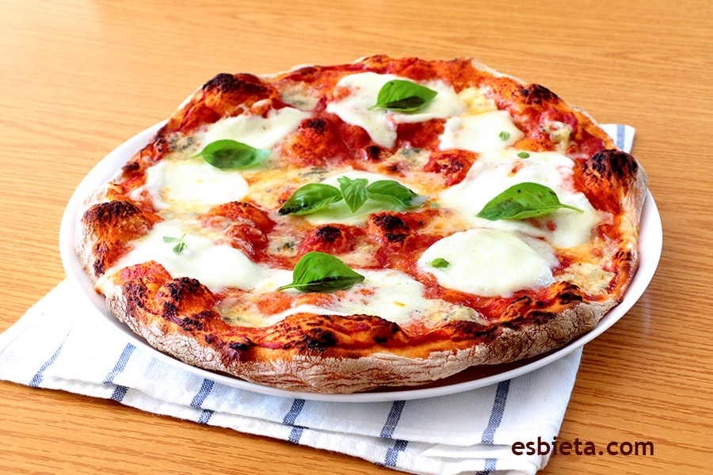

<h1>Lasagna</h1>

<h2>Descripcion</h2>
<p>Un platillo italiano echo a base de trigo tomate y queso
</p>
<ul>
    <li>Pasta</li>
    <li>Peperoni</li>
    <li>Salsa de tomate</li>
    <li>Queso</li>
</ul>

<h3>Pasos</h3>
<ol>
    <li>Primero hierves la pasta</li>
    <li>Preparas la Salsa</li>
    <li>Ensamblas</li>
</ol>